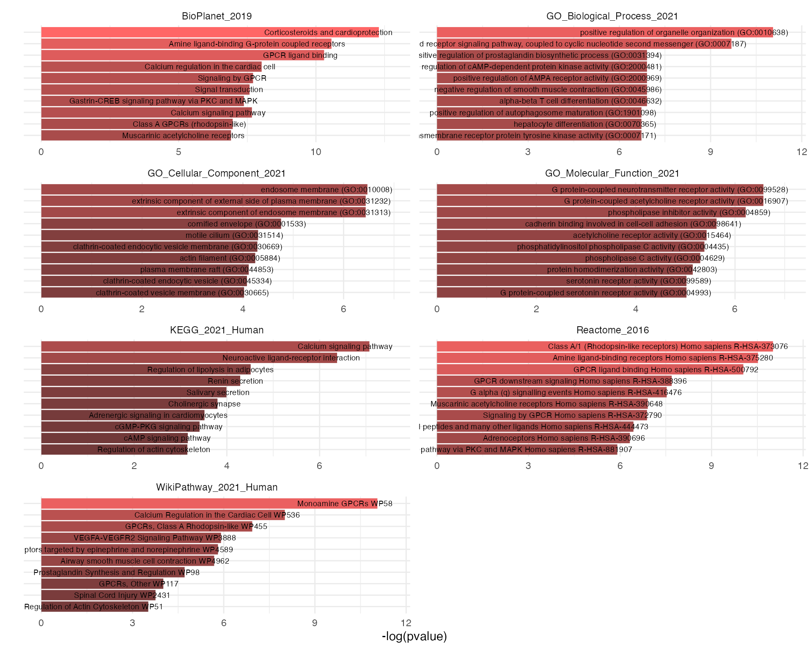
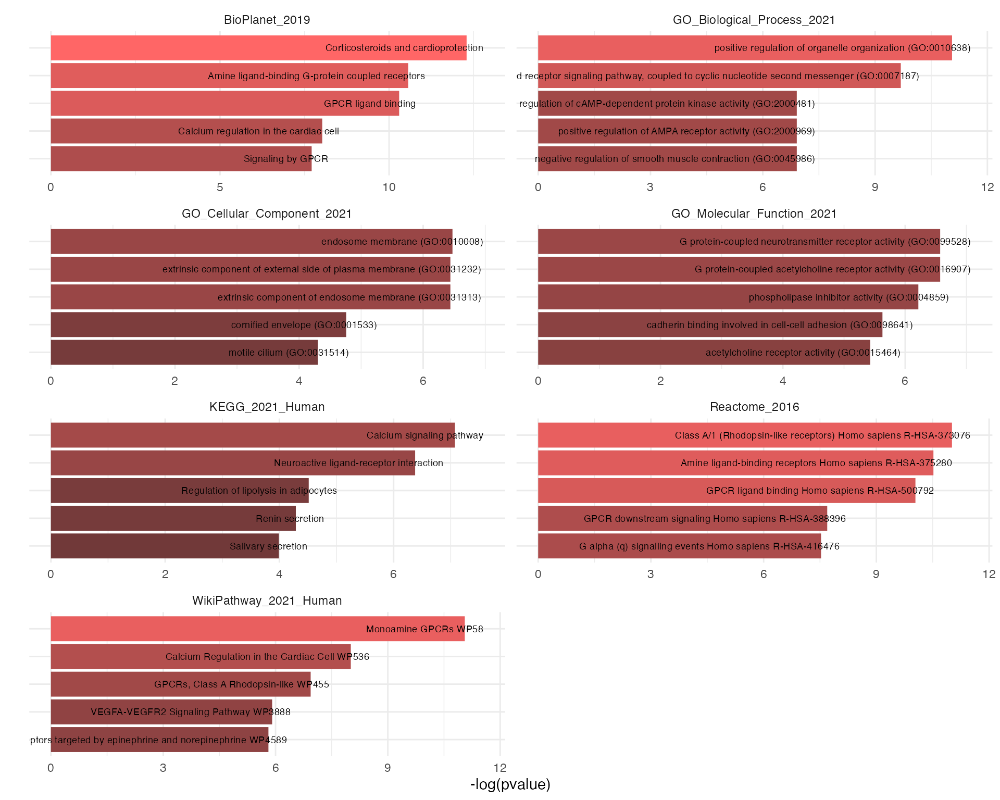

enrichr.Rmd
library(KRSA)
library(knitr)
library(tidyverse)
#> ── Attaching packages ─────────────────────────────────────── tidyverse 1.3.1 ──
#> ✓ ggplot2 3.3.5 ✓ purrr 0.3.4
#> ✓ tibble 3.1.6 ✓ dplyr 1.0.8
#> ✓ tidyr 1.2.0 ✓ stringr 1.4.0
#> ✓ readr 2.1.2 ✓ forcats 0.5.1
#> ── Conflicts ────────────────────────────────────────── tidyverse_conflicts() ──
#> x dplyr::filter() masks stats::filter()
#> x dplyr::lag() masks stats::lag()You can perform gene set enrichment analysis using Enrichr by using either a set of PamChip peptide IDs or gene symbols.
example_peptide_list <- c("ACM5_494_506", "ADDB_696_708", "ADRB2_338_350", "ANXA1_209_221")
enrichr_results <- krsa_enrichr(peptides = example_peptide_list)
#> GO_Biological_Process_2021 ...
#> GO_Cellular_Component_2021 ...
#> GO_Molecular_Function_2021 ...
#> WikiPathway_2021_Human ...
#> Reactome_2016 ...
#> KEGG_2021_Human ...
#> BioPlanet_2019 ...
head(enrichr_results, 10)
#> # A tibble: 10 × 8
#> index term pvalue odds_ratio combined_score genes adjusted_pvalue lib
#> <int> <chr> <dbl> <dbl> <dbl> <chr> <dbl> <chr>
#> 1 1 positive… 1.58e-5 644. 7120. ANXA… 0.00267 GO_B…
#> 2 2 G protei… 6.21e-5 316. 3065. ANXA… 0.00525 GO_B…
#> 3 3 positive… 1.00e-3 1666 11509. ADRB2 0.0113 GO_B…
#> 4 4 negative… 1.00e-3 1666 11509. ADRB2 0.0113 GO_B…
#> 5 5 positive… 1.00e-3 1666 11509. ADRB2 0.0113 GO_B…
#> 6 6 alpha-be… 1.00e-3 1666 11509. ANXA1 0.0113 GO_B…
#> 7 7 positive… 1.00e-3 1666 11509. ANXA1 0.0113 GO_B…
#> 8 8 positive… 1.20e-3 1333. 8964. ADRB2 0.0113 GO_B…
#> 9 9 activati… 1.20e-3 1333. 8964. ADRB2 0.0113 GO_B…
#> 10 10 hepatocy… 1.20e-3 1333. 8964. ANXA1 0.0113 GO_B…Alternatively, the input coould be gene symbols instead of peptide ids:
enrichr_results_genes <- krsa_enrichr(genes = c("AKT1", "AKT2", "AKTe"))
#> GO_Biological_Process_2021 ...
#> GO_Cellular_Component_2021 ...
#> GO_Molecular_Function_2021 ...
#> WikiPathway_2021_Human ...
#> Reactome_2016 ...
#> KEGG_2021_Human ...
#> BioPlanet_2019 ...
head(enrichr_results_genes, 10)
#> # A tibble: 10 × 8
#> index term pvalue odds_ratio combined_score genes adjusted_pvalue lib
#> <int> <chr> <dbl> <dbl> <dbl> <chr> <dbl> <chr>
#> 1 1 regulati… 2.25e-7 9996. 153020. AKT2… 0.0000345 GO_B…
#> 2 2 positive… 3.15e-7 7997. 119719. AKT2… 0.0000345 GO_B…
#> 3 3 mammary … 4.20e-7 6664. 97844. AKT2… 0.0000345 GO_B…
#> 4 4 positive… 5.40e-7 5711. 82427. AKT2… 0.0000345 GO_B…
#> 5 5 negative… 6.75e-7 4997. 71005. AKT2… 0.0000345 GO_B…
#> 6 6 positive… 1.17e-6 3634. 49634. AKT2… 0.0000366 GO_B…
#> 7 7 regulati… 1.36e-6 3331. 44982. AKT2… 0.0000366 GO_B…
#> 8 8 positive… 1.36e-6 3331. 44982. AKT2… 0.0000366 GO_B…
#> 9 9 positive… 1.36e-6 3331. 44982. AKT2… 0.0000366 GO_B…
#> 10 10 mammary … 1.57e-6 3074. 41080. AKT2… 0.0000366 GO_B…The results could be plotted using the krsa_enrichr_plot function:
krsa_enrichr_plot(enrichr_results)
Showing only top 5 terms per library: `
krsa_enrichr_plot(enrichr_results, terms_to_plot = 5)